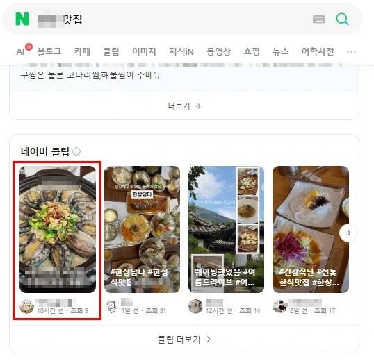

검색에서
만납니다
통합검색과 클립 탭에서 고객과 새로운 접점이 생깁니다. 글 한 줄이 아니라 화면으로 먼저 인지됩니다.
클립은 통합검색과 클립 탭만이 아니라 네이버 홈, 클립 추천, 클립 인기, 플레이스까지 여러 경로로 노출됩니다. 고객이 무엇을 찾고 있든, 마주칠 자리를 하나 더 만드는 일입니다.
통합검색과 클립 탭에서 고객과 새로운 접점이 생깁니다. 글 한 줄이 아니라 화면으로 먼저 인지됩니다.
매장 분위기, 제품, 서비스를 설명하지 않고 보여줍니다. 짧은 영상 하나가 긴 소개글보다 빠릅니다.
콘텐츠가 쌓일수록 키워드와 업체명이 같이 떠오릅니다. 한 번의 노출보다 반복되는 인지가 남습니다.
플레이스와 블로그만으로 끝내지 않습니다. 클립이라는 접점을 더해 고객과 만날 길을 넓힙니다.
통합검색에서 클립 섹션이 뜨면 카드는 네 장만 보입니다. 다섯 번째부터는 옆으로 넘겨야 나옵니다. 그래서 다섯 번째와 백 번째는 사실상 같은 자리입니다. 고객의 시선이 닿는 구간이 좁다는 뜻이고, 그 안에 들어가는 일이 의미를 갖는 이유입니다.
2026년 9월 ‘팔당 맛집’ 통합검색 클립 섹션 실측. 왼쪽 첫 자리가 실행연구소가 올린 클립입니다.

통합검색에 클립 섹션이 있으면 그 섹션 안, 없으면 클립 탭에서 4위 이내로 올립니다.
주말을 포함한 25일입니다. 월보장 방식으로만 진행합니다.
순위권에 오른 것을 확인하신 뒤에 입금하시면 됩니다.
키워드 하나 보내주시는 것으로 시작합니다. 가능 여부를 먼저 알려드리고, 입금은 순위를 확인하신 다음입니다. 자리만 잡고 끝내지 않습니다 — 올라간 뒤에 무엇을 보여줄지가 남는 일이라, 콘텐츠도 같이 봅니다.
노출을 원하는 검색어를 알려주시면 됩니다. 지역·업종 조합이면 좋습니다.
해당 키워드의 클립 섹션 유무와 경쟁 상황을 보고 가능한지 먼저 답을 드립니다. 가능하면 견적을 함께 보냅니다.
보유하신 영상을 쓰거나, 없으시면 제작해 드립니다. 60초 이내를 권합니다. 올라가도 보여줄 것이 약하면 고객은 그냥 넘깁니다. 무엇을 담을지부터 같이 정합니다.
실행연구소가 업로드합니다. 업로드한 클립은 플레이스 사진 탭에서도 확인하실 수 있습니다.
순위권 노출을 확인하신 다음에 입금하시면 됩니다. 미노출 시에는 기존 영상을 삭제하고 동일 영상으로 재업로드해 다시 작업합니다.
60초 이내를 권장합니다. 최대 90초까지 작업할 수 있지만, 길어질수록 노출 가능성이 낮아집니다.
업로드한 클립은 플레이스 사진 탭에서도 확인할 수 있습니다. 검색에서 한 번, 플레이스에서 한 번 더 보입니다.
미노출 시 기존 영상을 삭제한 뒤 동일 영상으로 재업로드해 다시 작업합니다. 별도 비용은 없습니다.
영상이 없으시면 제작해 드립니다. 1분 이내 기준 10만원부터입니다.
업종과 지역을 가리지 않습니다. 아래는 실제 노출 화면입니다.
여기서 답이 안 나오면 바로 물어보셔도 됩니다. 키워드 확인은 비용이 들지 않습니다.
답이 없는 항목은 상담에서 바로 확인해 드립니다.
가능한 키워드인지 먼저 확인해 드립니다. 가능하면 견적을 같이 보내고, 어려우면 어려운 이유를 말씀드립니다.